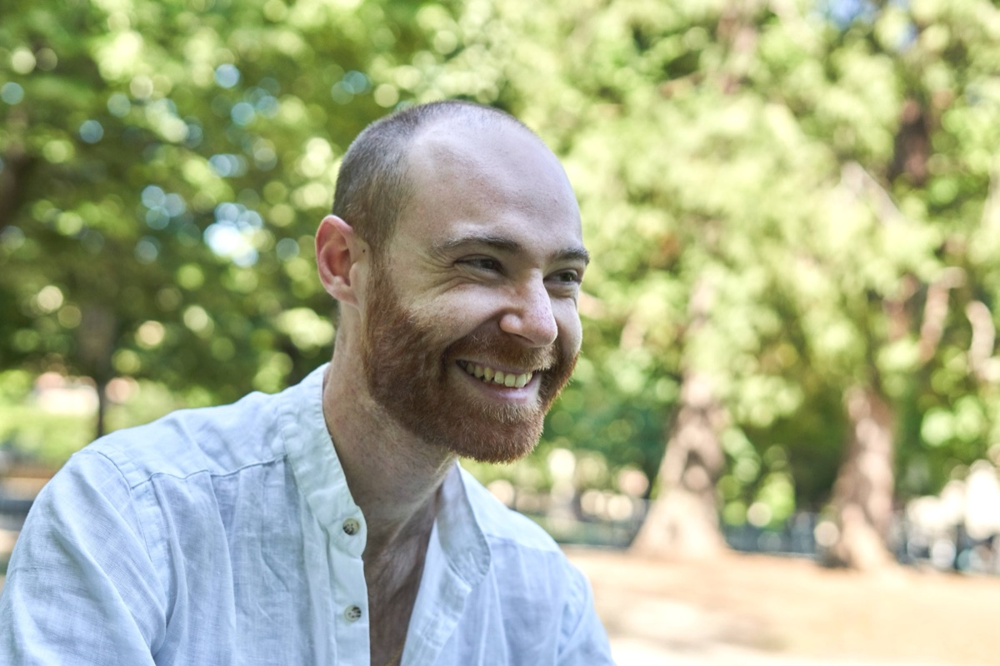

About me

My name is Emmanuel Maria Bruno. I was born in Milano, Italy, on 22 May 1992 from an Italian father and American mother that spoke to me both in Italian and English; I always say I’m terrible at both! I’m the first of three children, meaning that I had to fight all the battles, from the TV at night to how far I could drive the car alone.
I’ve studied in a scientific institute and picked up Biology as a major both in my bachelor's and master's at the Universita’ Statale di Milano.
I’m currently living in my dream city, New York, working as a laboratory manager at Memorial Sloan Kettering Cancer Center.
In parallel to my scientific life, I’ve secretly grown my two other main interests: music and photography.
After playing the piano for several years, I decided my instrument would be the guitar (my father has a big guitar collection and didn’t want my brother to get them all). I’ve started two bands in which I used to create the music and we won several contests.
I love to travel (favorite trip? Iceland!), walking solo or perhaps with the company of my dog, who at night I can follow because he wears one of those collar lights.
Photography was just a means to report my journeys but soon or later it has become something bigger than I would ever have thought. I’m getting so much out of it, not only about the hidden beauty that I can reveal but also it allows me to discover a bit more of myself, getting out of my comfort zone.